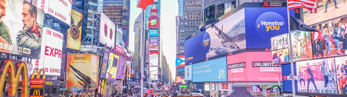

New Captivation Stories

Pick the yellow peach that looks like a sunset with its red, orange, and pink coat skin, peel it off with your teeth. Sink them into unripened...
Brandon NworjihDec 20, 2018 at 5:27pm

Katy LiuSep 29, 2017 at 9:48 am

Katy LiuSep 29, 2017 at 9:48 am
Katy LiuSep 29, 2017 at 9:48 am